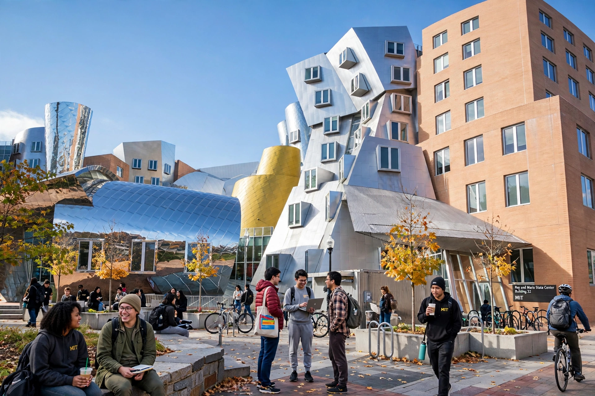

The MIT Stata Center, home of CSAIL, with its playful deconstructivist angles
MIT's research enterprise spans five schools and dozens of interdisciplinary laboratories and centres. The Institute's motto — mens et manus, "mind and hand" — captures its habit of pairing theory with building things.
The Computer Science and Artificial Intelligence Laboratory — MIT's largest on-campus lab, working on robotics, systems, and AI.
Inventing new media and human-computer interaction since 1985, from wearable computing to synthetic biology interfaces.
A federally funded R&D centre in Lexington working on national-security technology.
Integrative cancer research bringing engineers and biologists together.
Research and education for a low-carbon energy future.
Neighbouring institutes (independent but affiliated) driving genomics and biomedical discovery.
Lab descriptions paraphrased from memory.